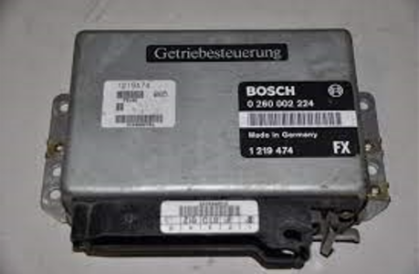

TCU
TCU=Transmission Control Unit=（自动）变速箱控制单元- 作用：通过电磁阀控制油压，实现离合器自动接合或者分离，在合适的时机完成档位切换，提高车辆的动力性、经济性、平顺性
- 根据行车数据进行车速、驾驶者动力请求等数据选择档位、匹配变速箱输入输出两端的转速，实现快速、平顺、稳定的档位切换，既能让车辆行驶更平稳舒适又安全，还能降低变速箱损耗、提升系统寿命
- 重要性：
TCU之于燃油车，重要性不亚于，VCU之于纯电车 - 举例
- 博世为宝马某车型设计的TCU模块
- 
- 博世为宝马某车型设计的TCU模块
- 背景知识
- 燃油车的变速箱形式
AT变速箱双离合变速箱CVT变速箱
- 燃油车的变速箱形式
- 作用：通过电磁阀控制油压，实现离合器自动接合或者分离，在合适的时机完成档位切换，提高车辆的动力性、经济性、平顺性